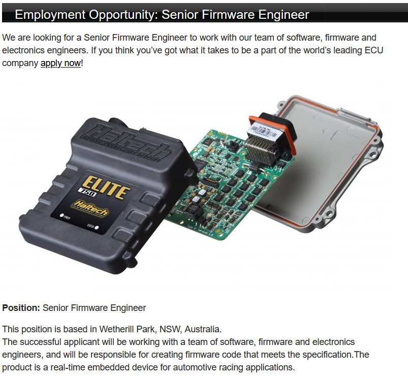
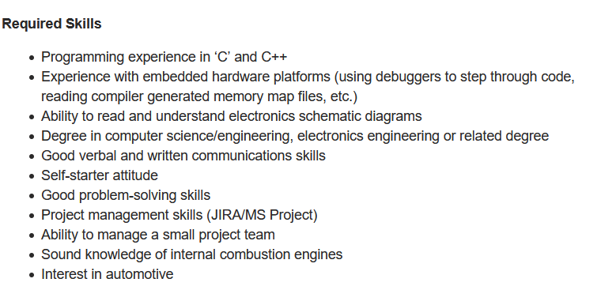
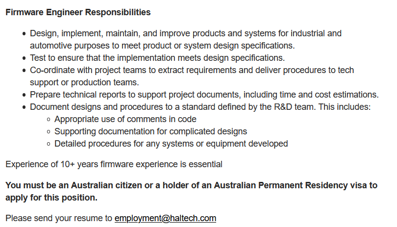

Employment Opportunity - Firmware Engineer

Haltech is an Australian based company that builds engine control units (ECUs) and dashboard panels for performance and utility vehicles, particularly units that are able to be reprogrammed to improve performance or economy of the vehicle. The position advertised is for a firmware engineer, who would be tasked with designing, testing, and programming new products as well as fixing problems with old ones. This particularly interests me as it combines two of my biggest interests, IT and car tuning, and it would be amazing to have a small part to do with building many of the race cars in Australia.
Haltech are looking for experienced firmware engineers that are well read in ‘C’ and C++, with a degree in computer science, electrical engineering or another related field necessary. They are also in need of somebody who is capable of managing a team and has a solid knowledge of how internal combustion engines work.
Currently I am like a child wearing a cardboard box over his head, dreaming of being Neil Armstrong taking his first step on the moon. Haltech are looking for someone with more years’ experience in firmware engineering than I have years since leaving primary school. But, I know a small amount of programming, and I am constantly learning more about how engines work and the intricacies of such, and maybe if I keep working on my skills I might see myself in a similar position in the future.


In order to be considered to work in such a position, I would have to greatly expand my knowledge of programming and would also need to continue spending a significant amount of my spare time pulling apart and rebuilding internal combustion engines, as well as understanding the inner workings of an ECU. I think this is feasible as they are both things I find satisfying and interesting and I would love to see myself working a similar job when I have the skills necessary.